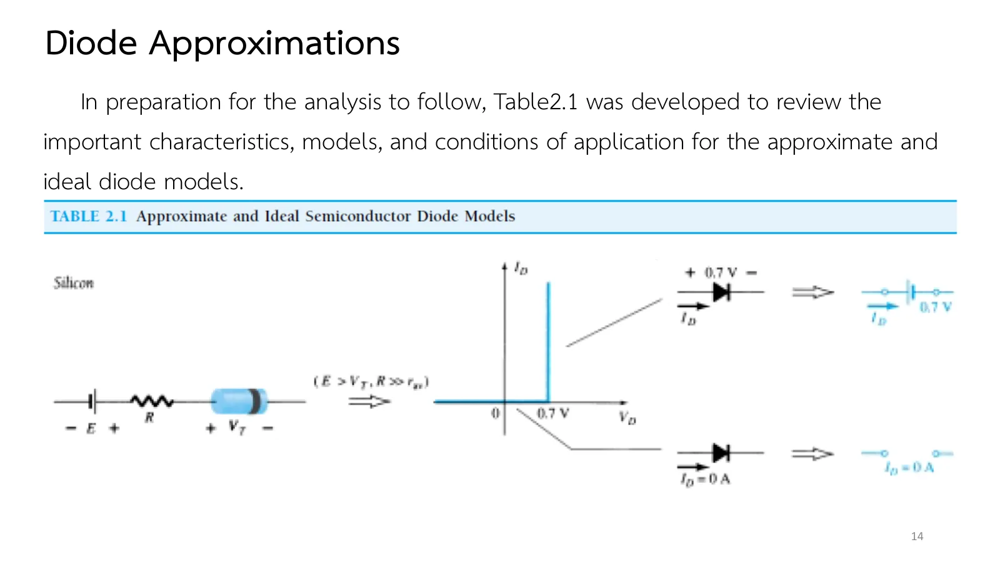
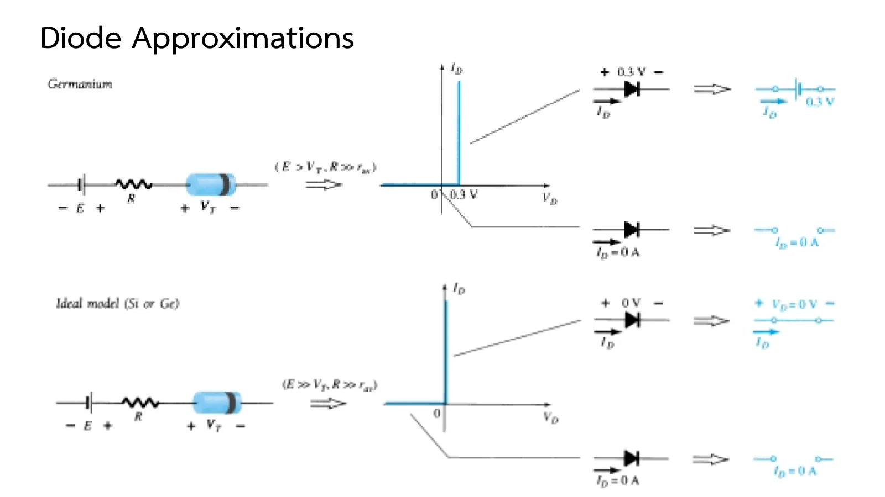
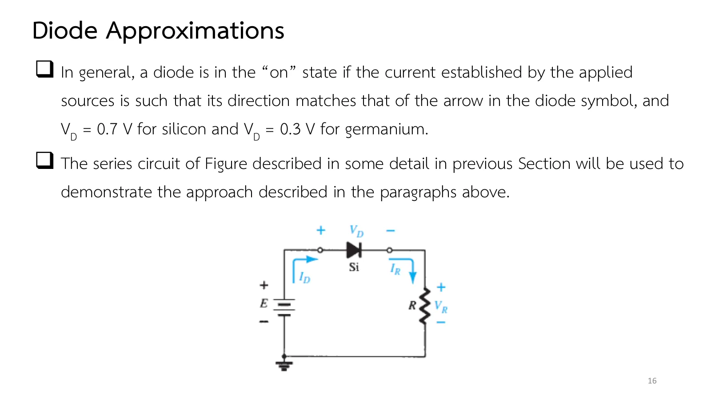
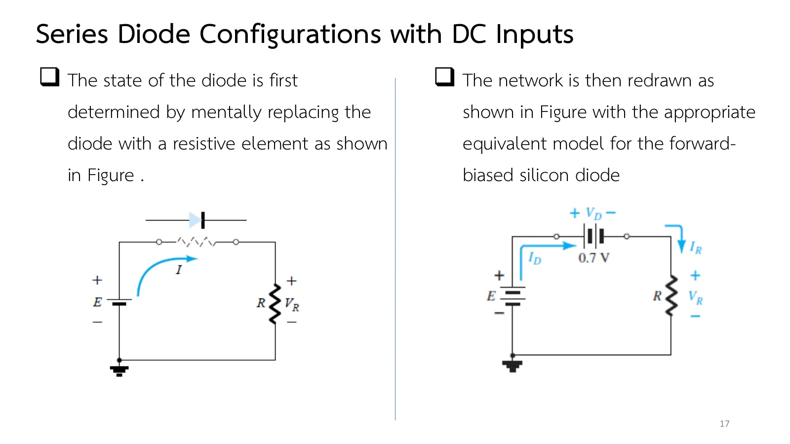
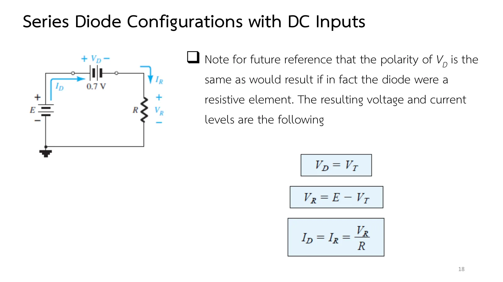
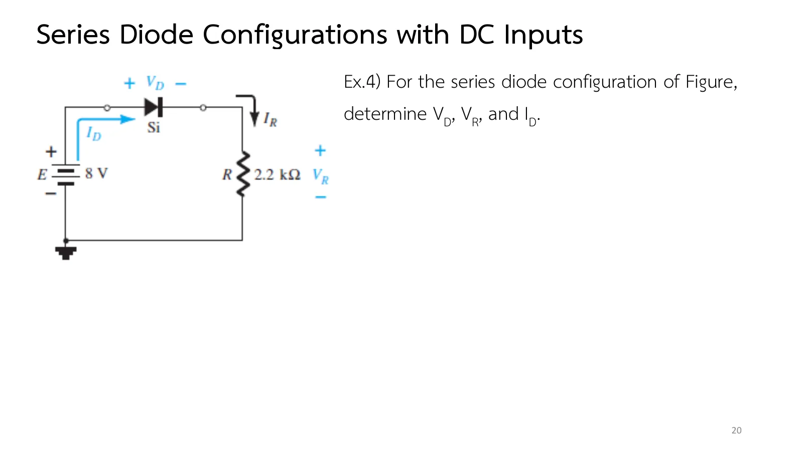
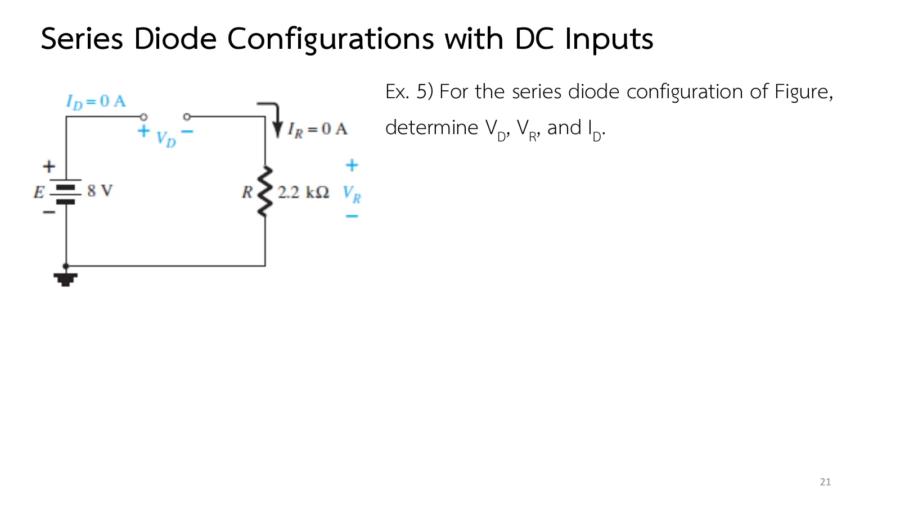

แบบจำลองโดยประมาณและวงจรไดโอดอนุกรม Diode approximations and series circuits
Diode approximations and series circuits Find the state, then substitute the model
ไม่มีใครอยากลากเส้นโหลดบนกราฟทุกครั้งที่ต้องแก้วงจรไดโอด ข่าวดีคือในวงจรส่วนใหญ่ ไดโอดเปลี่ยนร่างเป็นของง่าย ๆ ได้เพียงสามแบบ: แบตเตอรีก้อนเล็ก ลวดเส้นหนึ่ง หรือช่องเปิด สิ่งที่ต้องคิดคือไดโอดนำหรือไม่ เพราะคำตอบนี้บอกว่าจะใช้ร่างไหน หน้านี้มีตาราง 2.1 ที่ใช้ตลอดทั้งบท วิธีหาสถานะด้วยตัวต้านทานในใจที่ภาพจำลองแสดงทีละขั้น (ส่วน A) โจทย์ Ex.4 และ Ex.5 ซึ่งต่างกันเพียงทิศของไดโอด และแบบฝึกเพิ่ม (สไลด์บทที่ 2 ชุดที่ 1 หน้า 13–22 · Boylestad หัวข้อ 2.3–2.4)
Nobody wants to draw a load line every time a diode circuit needs solving. The good news is that in most circuits the diode can take one of just three simple forms: a small battery, a piece of wire, or a gap. What needs thought is whether the diode is on, because that decides which form to use. This page has Table 2.1, used through the whole chapter, the imagined-resistor method for finding the state, shown step by step in the simulation (section A), Ex.4 and Ex.5, which differ only in the direction of the diode, and more practice (chapter 2 slides, Part I, pp. 13–22 · Boylestad sections 2.3–2.4).
ประเด็นสำคัญของหน้านี้
- ตาราง 2.1: ไดโอดซิลิคอนที่นำกระแสคือแบตเตอรี 0.7 V เจอร์เมเนียม 0.3 V แบบอุดมคติคือลัดวงจร ส่วนไดโอดที่ไม่นำคือเปิดวงจร \(I_D = 0\) แบบประมาณใช้ได้เมื่อ \(R \gg r_{av}\) แบบอุดมคติใช้ได้เมื่อ \(E \gg V_K\) ด้วย (สไลด์หน้า 14–15)
- หาสถานะก่อน: นึกว่าไดโอดเป็นตัวต้านทาน ถ้ากระแสที่ได้ไหลทางเดียวกับหัวลูกศร และแรงดันที่ดันอยู่มากกว่า \(V_K\) ไดโอดนำ ไม่อย่างนั้นไม่นำ (สไลด์หน้า 16–17)
- ขั้วของ \(V_D\) เหมือนกับเมื่อไดโอดเป็นตัวต้านทาน และในวงจรอนุกรม \(I_D = I_R\) (สไลด์หน้า 18)
- เปิดวงจรมีแรงดันเท่าไรก็ได้แต่กระแสเป็นศูนย์ ลัดวงจรมีแรงดันศูนย์แต่กระแสถูกจำกัดด้วยวงจรรอบนอก ไดโอดที่ไม่นำจึงอาจรับแรงดันทั้งหมดของแหล่งจ่าย (สไลด์หน้า 22)
Key points of this page
- Table 2.1: a conducting silicon diode is a 0.7 V battery, germanium 0.3 V, the ideal diode a short; a diode that is off is an open circuit, \(I_D = 0\). The approximate model needs \(R \gg r_{av}\), the ideal one also \(E \gg V_K\) (slides pp. 14–15).
- Find the state first: imagine a resistor in place of the diode. If the resulting current follows the arrowhead and the voltage pushing it exceeds \(V_K\), the diode is on; otherwise it is off (slides pp. 16–17).
- The polarity of \(V_D\) is the one a resistor would have, and in a series circuit \(I_D = I_R\) (slide p. 18).
- An open circuit can have any voltage but no current; a short has no voltage but a current set by the rest of the network. An off diode can therefore take the whole supply voltage (slide p. 22).
ตาราง 2.1: แบตเตอรี ลวด หรือช่องเปิด
Table 2.1: a battery, a wire or a gap
แบบจำลองเชิงเส้นเป็นช่วงของบทที่ 1 มีความต้านทาน \(r_{av}\) อยู่ด้วย แต่สไลด์หน้า 13 อธิบายว่าการวิเคราะห์ด้วยเส้นโหลดไม่ได้ใช้มัน เพราะ \(r_{av}\) มักเล็กกว่าตัวต้านทานอื่นที่ต่ออนุกรมอยู่มาก เป้าหมายของตำราคือเข้าใจพฤติกรรมของอุปกรณ์โดยใช้คณิตศาสตร์ให้น้อยที่สุด
ตาราง 2.1 (สไลด์หน้า 14–15) จึงเหลือของเพียงสามอย่าง: ไดโอดซิลิคอนที่นำคือแบตเตอรี 0.7 V เจอร์เมเนียมคือ 0.3 V แบบอุดมคติคือลวดเส้นหนึ่ง และไดโอดที่ไม่นำทุกชนิดคือช่องเปิด \(I_D = 0\) แต่ละแบบมีเงื่อนไขกำกับ: แบบประมาณใช้ได้เมื่อ \(R \gg r_{av}\) แบบอุดมคติต้องการ \(E \gg V_K\) ด้วย
The piecewise-linear model of chapter 1 includes a resistance \(r_{av}\), but slide p. 13 explains why load-line analysis left it out: \(r_{av}\) is typically much smaller than the other series elements. The book aims to understand a device with as little mathematics as possible.
So Table 2.1 (slides pp. 14–15) keeps just three things: a conducting silicon diode is a 0.7 V battery, germanium 0.3 V, the ideal diode a piece of wire, and any diode that is off is a gap, \(I_D = 0\). Each comes with a condition: the approximate model needs \(R \gg r_{av}\), the ideal one also \(E \gg V_K\).



ตัวต้านทานในใจ
The imagined resistor
จะเลือกร่างได้ต้องรู้ก่อนว่าไดโอดนำหรือไม่ สไลด์หน้า 16 ให้หลักว่าไดโอดนำเมื่อกระแสที่แหล่งจ่ายพยายามสร้างไหลทางเดียวกับหัวลูกศรในสัญลักษณ์ วิธีหาทิศของกระแสนั้นในสไลด์หน้า 17 คือนึกว่าตำแหน่งของไดโอดเป็นตัวต้านทาน ดูว่ากระแสไหลทางไหน แล้วจึงวาดวงจรใหม่ด้วยแบบจำลองที่ตรงกับสถานะ เช่น แบตเตอรี 0.7 V สำหรับไดโอดซิลิคอนที่นำ
Before choosing a form you must know whether the diode is on. Slide p. 16 gives the rule: the diode is on when the current the sources try to set up flows the same way as the arrowhead of its symbol. Slide p. 17 finds that direction by imagining a resistor in the diode's place and seeing which way the current flows; only then is the circuit redrawn with the model that matches the state, such as a 0.7 V battery for a conducting silicon diode.


↓ ส่วน A: สลับระหว่างตัวต้านทานในใจ วงจรสมมูล และไดโอดจริง ค่าในขั้นที่ 2 ต้องตรงกับไดโอดทุกค่า
↓ Section A: switch between the imagined resistor, the equivalent circuit and the diode itself; every value of step 2 must match the diode
หาสถานะของไดโอดทีละขั้น
Finding the state of a diode, step by step
ผลที่ได้มีสองแบบ ถ้าไดโอดนำ แทนด้วยแบตเตอรี \(V_K\) ได้ \(V_R = E - V_K\) และ \(I_D = I_R = V_R/R\) โดยขั้วของ \(V_D\) เหมือนกับเมื่อมันเป็นตัวต้านทาน (สไลด์หน้า 18) ถ้ากลับทิศไดโอด กระแสสวนหัวลูกศร ไดโอดเป็นช่องเปิด กระแสเป็นศูนย์ \(V_R = 0\) และแรงดัน E ทั้งหมดไปอยู่ที่ไดโอด (สไลด์หน้า 19) ลองเลือก "ขั้นที่ 1" แล้วเลื่อน E ผ่านศูนย์ ดูจุดกลับทิศ
There are two outcomes. If the diode is on, the battery \(V_K\) goes in, \(V_R = E - V_K\) and \(I_D = I_R = V_R/R\), with \(V_D\) poled just as it would be across a resistor (slide p. 18). Turn the diode round and the current runs against the arrowhead: the diode is a gap, the current is zero, \(V_R = 0\), and the whole of E lands across the diode (slide p. 19). Choose "step 1" and move E through zero to watch the dots turn round.


เลือกสิ่งที่วางในตำแหน่งของไดโอด: "ขั้นที่ 1" ใส่ตัวต้านทานแทน (จุดแสดงทิศของกระแสที่วงจรพยายามสร้าง) "ขั้นที่ 2" ใส่วงจรสมมูลตามสถานะที่หาได้ (แบตเตอรี \(V_K\) หรือช่องเปิด) และ "ไดโอด" คือไดโอดตามแบบจำลองที่เลือก ค่าในขั้นที่ 2 ต้องเท่ากับของไดโอดทุกค่า เลื่อน E ทั้งบวกและลบ กลับทิศไดโอด และเปลี่ยนวัสดุ แผงข้างภาพแสดงแรงดันรอบวงตามกฎของเคียร์ชอฟฟ์ (ยกขึ้นเป็นบวก ตกลงเป็นลบ ผลรวมเป็นศูนย์)
Choose what sits in the diode's place: "step 1" puts a resistor there (the dots show which way the circuit tries to push current), "step 2" the equivalent of the state found (a battery \(V_K\) or a gap), and "diode" the diode itself in the chosen model. Every value of step 2 must match the diode's. Move E both ways, turn the diode round and change the material. The side panel shows the loop voltages of Kirchhoff's law (rises positive, drops negative, summing to zero).
Ex.4: ไดโอดซิลิคอนในวงจรอนุกรม
Ex.4: a silicon diode in a series circuit
Ex.4 (สไลด์หน้า 20) คือวงจรของส่วน A ที่ใส่ตัวเลข: E = 8 V, R = 2.2 kΩ และไดโอดซิลิคอน ทำตามสองขั้นเดิม หาสถานะก่อน แล้วค่อยแทนแบบจำลอง
Ex.4 (slide p. 20) is the circuit of section A with numbers in it: E = 8 V, R = 2.2 kΩ and a silicon diode. Follow the same two steps: the state first, then the model.

วงจรอนุกรมมีแหล่งจ่าย E = 8 V ไดโอดซิลิคอน และ R = 2.2 kΩ ดังรูป จงหา \(V_D\), \(V_R\) และ \(I_D\)
A series circuit has E = 8 V, a silicon diode and R = 2.2 kΩ, as in the figure. Determine \(V_D\), \(V_R\) and \(I_D\).
ขั้นที่ 2 วงจรในภาพจำลองแทนไดโอดด้วยแบตเตอรี 0.7 V ตามตาราง 2.1 ลองตอบก่อน
At step 2 the simulated circuit puts the 0.7 V battery of Table 2.1 in place of the diode. Try it first.
Ex.5: กลับทิศไดโอดของ Ex.4
Ex.5: the diode of Ex.4 turned round
Ex.5 ใช้วงจรเดิมทุกอย่าง ยกเว้นไดโอดที่หันกลับ กระแสในตัวต้านทานในใจจึงสวนหัวลูกศร ก่อนเปิดเฉลย ลองตอบว่าแรงดัน 8 V ไปอยู่ที่ R หรือที่ไดโอด แล้วดูสไลด์หน้า 22 ท้ายข้อ ซึ่งสรุปกฎของเปิดวงจรและลัดวงจรที่ต้องจำ
Ex.5 keeps everything except the diode, which now faces the other way, so the current through the imagined resistor runs against the arrowhead. Before opening the solution, decide whether the 8 V ends up across R or across the diode, then look at slide p. 22 at the end of the problem, which sums up the rules for open and short circuits worth remembering.

ทำ Ex.4 ซ้ำเมื่อกลับทิศไดโอด (แคโทดหันเข้าหาแหล่งจ่าย) จงหา \(V_D\), \(V_R\) และ \(I_D\) โดย \(V_D\) วัดตามขั้วในรูป (บวกทางซ้าย)
Repeat Ex.4 with the diode turned round (its cathode towards the source). Determine \(V_D\), \(V_R\) and \(I_D\), with \(V_D\) taken as marked in the figure (positive on the left).
ขั้นที่ 2 แทนไดโอดด้วยช่องเปิด แผงข้างภาพแสดงว่าแรงดันทั้งหมดไปอยู่ที่ช่องเปิด ลองตอบก่อน
At step 2 the diode becomes a gap; the side panel shows the whole voltage landing across it. Try it first.

ฝึกเพิ่ม
More practice
ลองทำดู 1 — ตัวต้านทานในใจ
- ส่วน A เลือก "ขั้นที่ 1" แล้วเลื่อน E จาก +8 V ลงไป −8 V: จุดเปลี่ยนทิศ ตอน E เป็นบวกกระแสไหลตามเข็มนาฬิกา ผ่านตำแหน่งไดโอดตามหัวลูกศร
- กลับไปที่ "ไดโอด" แล้วเลื่อน E ช้า ๆ ผ่าน 0.7 V: ไดโอดซิลิคอนเริ่มนำที่ 0.7 V พอดี ต่ำกว่านั้นแรงดันทั้งหมดอยู่ที่ไดโอด
- เปลี่ยนเป็นเจอร์เมเนียม: เริ่มนำที่ 0.3 V และกระแสสูงกว่าซิลิคอนเล็กน้อยที่ E เท่ากัน
ลองทำดู 2 — ขั้นที่ 2 ต้องตรงกับไดโอด
- สลับระหว่าง "ขั้นที่ 2" กับ "ไดโอด" ที่ E ใด ๆ: ค่าในแผงข้างภาพไม่เปลี่ยน แปลว่าวงจรสมมูลถูกต้อง
- กลับทิศไดโอดแล้วตั้ง E = 8 V: ขั้นที่ 2 เป็นช่องเปิด แท่ง \(V_D\) ยาวเท่ากับ E และ \(V_R = 0\)
Try this 1 — the imagined resistor
- In section A choose "step 1" and move E from +8 V to −8 V: the dots turn round. With E positive the current flows clockwise, through the diode's place along the arrowhead.
- Back to "diode", move E slowly through 0.7 V: the silicon diode turns on at exactly 0.7 V; below that the whole voltage is across the diode.
- Switch to germanium: it turns on at 0.3 V, and at the same E carries slightly more current than silicon.
Try this 2 — step 2 must match the diode
- Switch between "step 2" and "diode" at any E: the values in the side panel do not change, so the equivalent circuit is right.
- Turn the diode round and set E = 8 V: step 2 is a gap, the \(V_D\) bar is as long as E, and \(V_R = 0\).